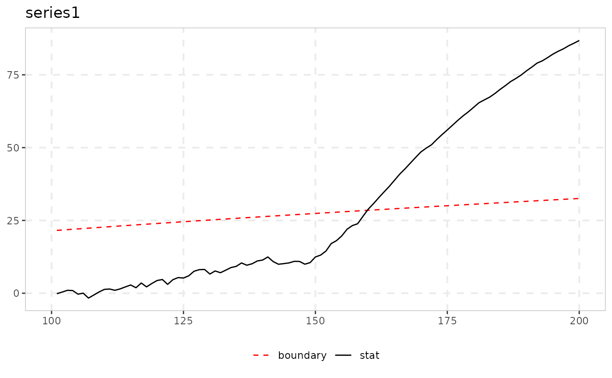
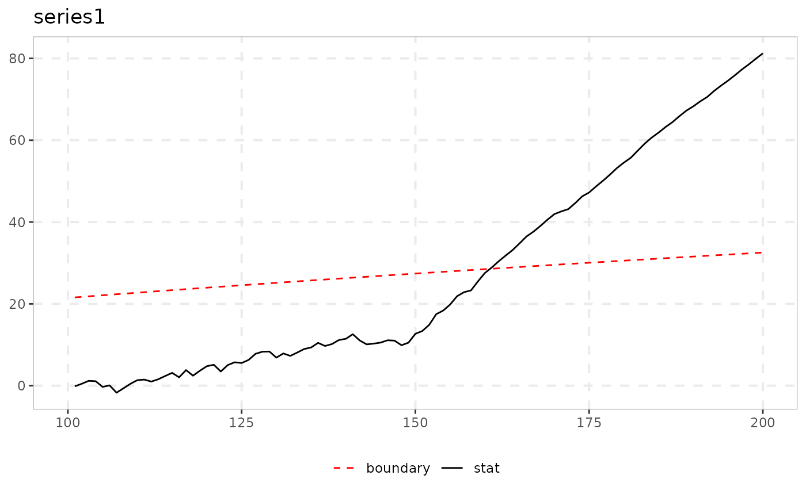

monitor_cusum implements the CUSUM real-time monitoring procedure of Homm
& Breitung (2012). You fix a training window [1, T*] that is assumed free
of exuberance. The function then compares the standardized cumulative sum of the
post-training first differences, S_t = (y_t - y_{T*}) / sigma_hat_t, with
the closed-form boundary c_t * sqrt(t), where
c_t = sqrt(b_alpha + log(t / T*)), and flags the first date at which the
boundary is breached.
Arguments
- data
A univariate or multivariate numeric time series object, a numeric vector or matrix, or a data.frame. A column may have leading or trailing
NAvalues, which describes an unbalanced panel in which series enter or exit the sample at different times. Those periods are filled withNAinbadfandbsadfand excluded from theadf,sadfandgsadfof that series. InteriorNAvalues (a gap in the middle of a series) are not supported. When any series is padded in this way, the panel statistics (bsadf_panelandgsadf_panel) are not available, and the function returnsNAfor them with a warning.- r_star
The end of the training window: a fraction in
(0, 1)of the sample (default0.5), or an integer number of observations if>= 1.- b_alpha
The boundary constant (eq. 29 of HB). The default
4.6is the one-sided asymptotic calibration of HB for a 5\ Section 3). It is an asymptotic upper bound on the false-alarm probability (Chu, Stinchcombe & White 1996) and not an exact size, so it is typically conservative in finite samples. It is ignored whenboundary = "finite".- boundary
"asymptotic"(default) usesb_alphadirectly."finite"instead looks up the finite-sample boundary constant of HB (their Table 8) fromsig_lvland the realized ratio of training length to monitoring horizon.sig_lvlmust then be one of90,95or99.- sig_lvl
Significance level on the 0 to 100 scale used throughout the package when
boundary = "finite"(default95). It is ignored whenboundary = "asymptotic".- type
"standard"(default) for the original CUSUM statistic of Homm & Breitung (2012), or"kernel"for the volatility-robust "CUSUMV" variant of Astill, Harvey, Leybourne, Taylor & Zu (2023).- h
Bandwidth (window length,
Nin AHLTZ) of the one-sided kernel spot-variance estimator whentype = "kernel". The default20is the value that the authors recommend from their experiments (their Section 3: "setting H = 20 delivered a procedure with the best trade-off" between robustness of the false-alarm rate and power). It is ignored whentype = "standard".- kernel
Kernel for the spot-variance estimator when
type = "kernel","gaussian"(default) or"uniform". It is ignored whentype = "standard".
Value
An object of class monitor_cusum_obj: a list with the statistic
path in the monitoring region (S) and boundary, the length of the
training window T_star, and alarm and alarm_date (the first
breach, NA if there is none).
Note
The boundary is closed-form throughout. It is either a fixed asymptotic
constant (boundary = "asymptotic", b_alpha = 4.6) or a lookup in the
published finite-sample table (boundary = "finite", Table 8 of Homm &
Breitung 2012). No simulation and no separate cv function is needed.
monitor (Family A) uses a recursive ADF-family statistic whose
boundary needs a wild bootstrap for calibration. This function uses a
structurally different statistic, a standardized running sum and not a recursive
regression. Its boundary is an asymptotic closed form (the inequality of Chu,
Stinchcombe & White 1996, eq. 28 of HB), so it needs no bootstrap and no
simulation and does not depend on the data beyond the running variance estimate
itself.
type = "kernel" instead uses the volatility-robust modification
("CUSUMV") of Astill, Harvey, Leybourne, Taylor & Zu (2023). Before cumulating,
it standardizes each first difference by its own one-sided kernel spot-variance
estimate (their eq. 6-7) and not by a single running variance. Their Corollary 1
establishes that the same boundary function gives a controlled asymptotic
false-alarm rate even under time-varying volatility. The standard CUSUM
statistic does not have this property, because its size-control result requires
homoskedasticity.
The function returns its own class and not radf_obj, so it does not work
with summary(), \link{datestamp} and tidy. It has its own print() and
autoplot() methods instead. print() shows the boundary and the alarm. See
vignette("naming-and-analysis", package = "exuber") for which functions fit
the shared pipeline and which do not.
References
Homm, U., & Breitung, J. (2012). Testing for speculative bubbles in stock markets: A comparison of alternative methods. Journal of Financial Econometrics, 10(1), 198-231.
Chu, C. S. J., Stinchcombe, M., & White, H. (1996). Monitoring structural change. Econometrica, 64(5), 1045-1065.
Astill, S., Harvey, D. I., Leybourne, S. J., Taylor, A. M. R., & Zu, Y. (2023). CUSUM-based monitoring for explosive episodes in financial data in the presence of time-varying volatility. Journal of Financial Econometrics, 21(1), 187-227.
See also
monitor for the monitoring alternative based on the
recursive ADF (Family A).
Other monitoring:
monitor(),
monitor_lbi(),
monitor_quantile()
Examples
# \donttest{
# A martingale training window, explosive from t = 150 to the sample end
y <- sim_psy1(n = 200, te = 150, tf = 200, seed = 7)
res <- monitor_cusum(y, r_star = 0.5)
print(res) # alarm should fire soon after t = 150
#>
#> ── monitor_cusum (T* = 100 / 200, b_alpha = 4.6) ───────────────────────────────
#>
#> series alarm alarm_date
#> series1 160 160
#>
autoplot(res)
#> Warning: Removed 2 rows containing missing values or values outside the scale range
#> (`geom_segment()`).

# Volatility-robust "CUSUMV" variant (Astill, Harvey, Leybourne, Taylor & Zu 2023):
# the same bubble, but volatility triples at t = 120, after the training window
y_vol <- sim_psy1(n = 200, te = 150, tf = 200, seed = 7,
e = sim_vol_break(199, tau = 0.6))
res_kernel <- monitor_cusum(y_vol, r_star = 0.5, type = "kernel")
autoplot(res_kernel)
#> Warning: Removed 2 rows containing missing values or values outside the scale range
#> (`geom_segment()`).

# }